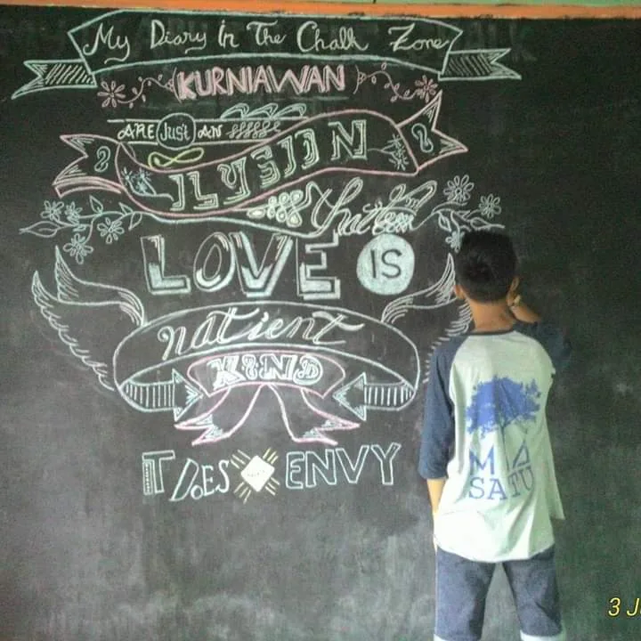
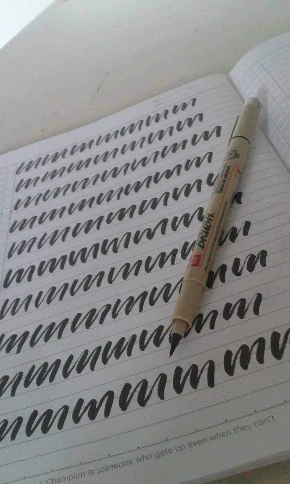
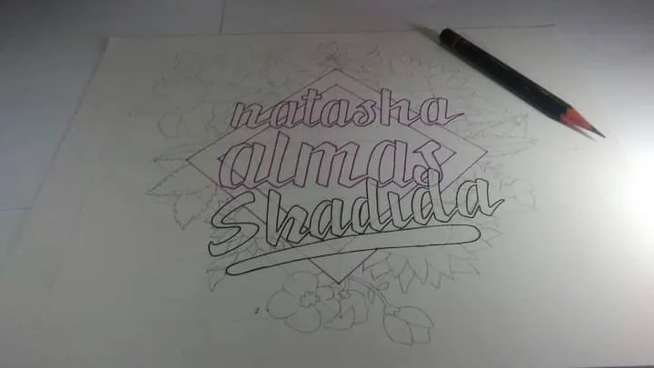
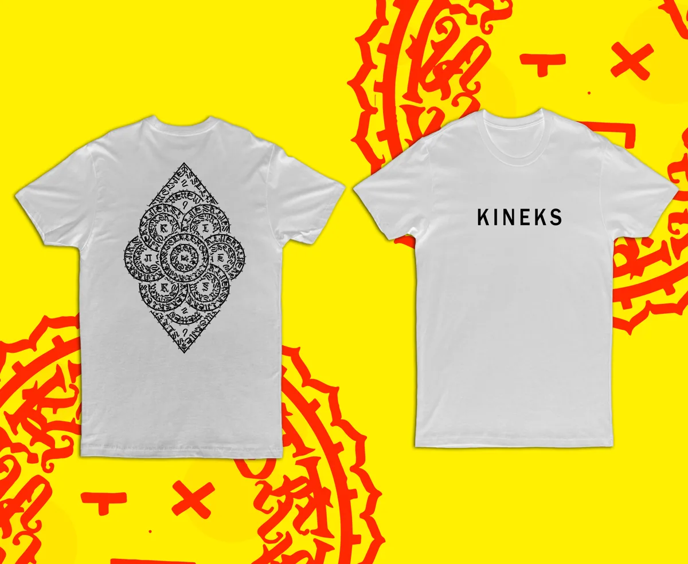
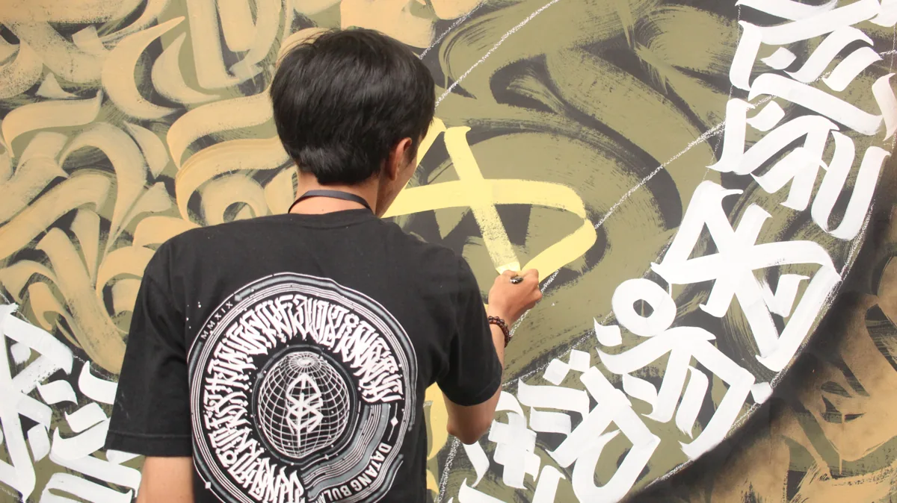
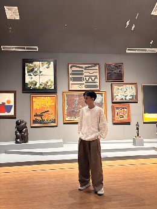
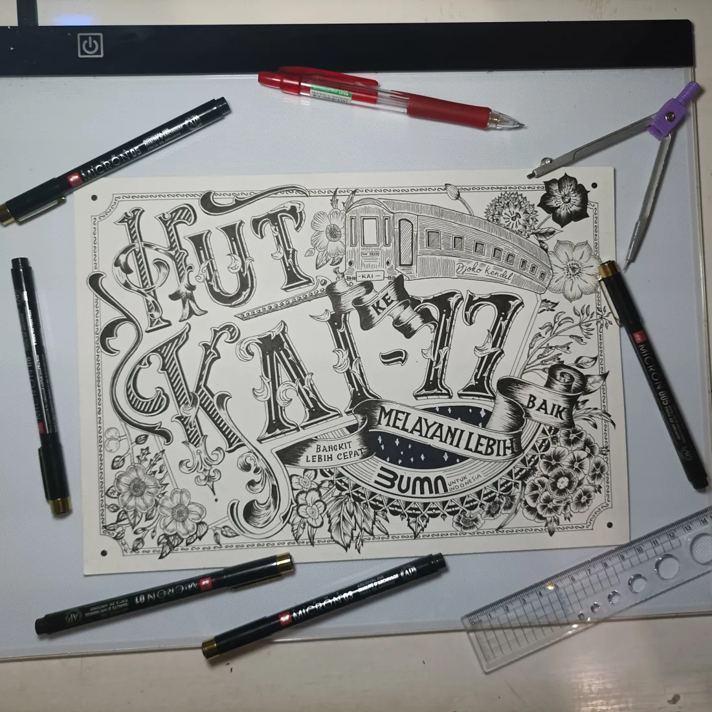

Bykineks
An independent type foundry founded in Indonesia by Dede Kurniawan in 2021.

A beginning in chalk
In 2016, lettering on a classroom blackboard caught Dede’s attention. He began drawing letters by hand. In his early portfolio, a page of repeated strokes sits alongside more elaborate pieces: pencil outlines, words drawn for others, and lettering experiments on paper.


Letters off the page
Dede also explored calligraffiti and street art. Two images from his portfolio show the change in scale: a design for a T-shirt with the word KINEKS on the chest, and a wall where the letters are large enough to stand inside their curves.


Dede Kurniawan
While studying visual communication design, a lecturer encouraged Dede to think about how typography could solve a communication problem. That question carried over into type design: how would the letters work together once someone else began setting words with them?
Dede founded Bykineks in 2021. Its first typeface was Zara. He later worked as a type designer at Indotype from 2023 to 2026.

Drawing alongside type design
A sheet from Dede’s 2022 archive shows how hand lettering continued alongside the foundry. The composition fills the page, with tools still gathered around its edges.
Contact the foundry ↗